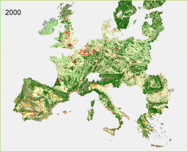

| Global Cooperation - B1 In the B1 scenario urbanization has less impacts, due to the lower requirements for residential/commercial areas compared to the Global Economy scenario. Spatial policies, assumed under this scenario, aim at concentrating urbanization in designated areas, leading to compact urbanization patterns. Policies aim at reinforcing the natural values by enhancing the Natura2000 network. Abandonment of agricultural lands offers opportunities to implement these policies. In this scenario there is an ambition to use 5.75% of fuel use from energy crops. This results in an increase of bio-energy crops that are for instance to be found in Northern Germany, Denmark, France, Poland and Spain. |
 Click here for full screen version |